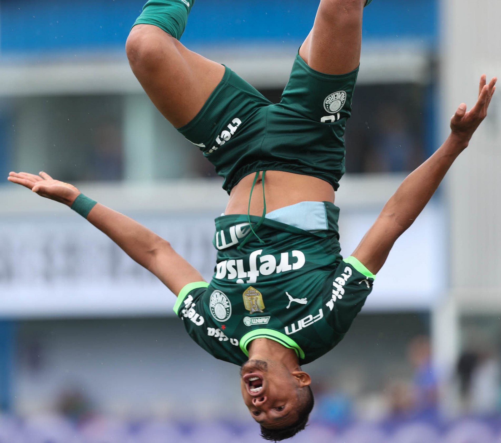

Pomodoro
25:00
Pomodoros concluídos: 0
Hora de focar!

Pomodoro
Pausa Curta
Pausa Longa
Configurações
Pomodoro (minutos):
Pausa Curta (minutos):
Pausa Longa (minutos):
Aplicar Configurações
Reinciar Configurações
Mostrar Configurações